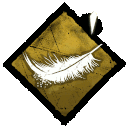
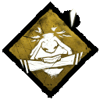
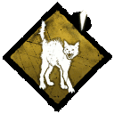
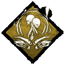

SANTUARIO
El Santuario de los Secretos se actualiza cada semana. Las ventajas que se encuentran actualmente son:
DE PIES LIGEROS
Corres con los pies ligeros, lo que hace que sea más difícil seguir tu rastro.
VOLUNTAD DE HIERRO
Puedes concentrarte y entrar en un estado semimeditativo para atenuar el dolor.
ESCALOFRÍOS
Un estremecimiento sobrenatural te advierte de que algo malo está a punto de ocurrir. Recibes un aviso cuando el Asesino vea en tu dirección dentro de un radio de 36 metros.
CAZA MENOR
Tienes la innegable habilidad de detectar el peligro. Obtén una advertencia sonora cuando mires en la dirección de los tótems y trampas del asesino.